sise à Metz


revu le 29 avril 2002


revu le 29 avril 2002
remerciement : cette section spéciale n'aurait pu voir le jour sans M. Alain Mauranne, à qui nous devons toutes les photographies. Qu'il soit ici chaudement remercié.
note : les photographies I et II ont été notablement réduites afin de diminuer le temps de chargement. Cliquez sur les images pour obtenir un agrandissement en 99764 couleurs.
PréambuleQu'est-ce qu'un logis alchimique ? De nombreux étudiants, à vrai dire, répondraient à cette question, qu'il s'agit de demeures où se sont déroulés de hauts faits en rapport avec l'Art sacré, où l'on voit d'habitude de vieux philosophes, à demi fous, portant un chapeau pointu sur la tête, triturant leurs matières jusqu'à plus soif et finissant par liquider, et leur santé, et leur avoir. En un mot, des farfelus ou des alambiqués. Pauvre alchimie, ravalée à une bien peu glorieuse destinée...Pourtant l'Art sacré peut se prévaloir d'un lignage distingué. La liste est importante des grands esprits que l'on pourrait citer, qui s'attachèrent à étudier les arcanes des vieux grimoires ou des parchemins.
- Cela dit d'abord, pour faire voir que l'alchimie est un sujet de connaissance tout à fait analysable et qui ne se distingue en fait, que par un langage voilé, ce que l'on appelle la « cabale hermétique ». Ce langage s'apparente étroitement aux recherches des Surréalistes tels qu'André Breton ou René Char, qui se sont d'ailleurs intéressés à l'alchimie.
- Cela dit, ensuite, pour montrer qu'il existe des demeures philosophales qui ne disent pas leurs noms. Non. C'est l'Artiste lui-même qui, lorsque les conditions et le contexte lui semblent réunies [symbole, illustration d'un mythe, d'une légende antique], est en droit de déclarer que toute demeure, tout objet, peut receler une intention hermétique, avouée ou pas par le sculpteur, le peintre, le musicien, voire l'écrivain : c'est dire qu'un logis alchimique peut venir se nicher même dans un livre, comme l'a montré de façon magistrale Fulcanelli pour une œuvre de De Cyrano Bergerac [Histoire comique, contenant les Estats et Empires de la Lune, Paris, Charles de Sercy, 1657]. Dans ce domaine, certes, on ne pourrait nier que quelque excès ait été commis. Tel n'est pas le cas des Deux Logis Alchimiques d'Eugène Canseliet [Pauvert, 1978] où l'Adepte, élève de Fulcanelli, se livre à l'analyse des caissons du château du Plessis-Bourré et d'une curieuse porte, montrant ostensiblement les symboles de l'Art. Nous avons donné une interprétation originale de cette porte, située dans le parc de la villa Palombara, à Rome, dans la section réincrudation. M. Alain Mauranne, à qui les Amoureux de science doivent d'avoir mis à jour des fragments alchimiques dans une cheminée sise à Avignon [Atalanta, XXV et site de la Librairie du Merveilleux] et dans d'autres lieux, a exercé sa sagacité dans la ville de Metz. Outre la cathédrale, dont on trouvera dans le commentaire des Entretiens du Roi Calid à Morien de nombreuses photographies, M. Mauranne nous a fait parvenir les clichés d'une très curieuse porte qui, disons-le tout de suite, ne présente pas les signes habituels de l'hermétisme associé à l'alchimie. Cependant, il est indéniable qu'on y trouve des hiéroglyphes qui peuvent s'intégrer dans un tel contexte, même si selon toute apparence - et au vu de ce que nous avons écris plus haut - il n'était pas dans les intentions de l'artiste qui l'a façonnée de produire une œuvre dédiée à Hermès. Il y a plus : la beauté intrinsèque de certains détails fait que se trouvent précisément réunies les conditions pour entamer l'approche ésotérique - par le biais de la transcription exotérique - que nous allons tenter ici. C'est le n° 22 de la rue En Nexirue qui va faire l'objet de notre attention : Nexirue vient d'un mot latin qui signifie « tuer ». Dans cette rue se trouvait en effet, au Moyen Âge, une potence servant aux exécutions publiques. L'immeuble du n°22 n'est pas le seul qui présente des particluarités. Un autre bâtiment remarquable se trouve dans cette rue : c'est l'ancien hôtel de Gargan, actuellement résidence d'Hannoncelle. L'hôtel de Gargan est une maison gothique du XVe siècle. Il s'y reflète une nette influence du gothique italien due à l'arrivée des banquiers italiens à Metz au XIIIe siècle. La toiture basse et le mur écran crénelé qui cache la toiture expriment cette influence. Les tympans de fenêtres de style gothique flamboyant datent l'édifice du XVe siècle. Quelques modifications ont été apportées ultérieurement. Ainsi, à gauche, un tympan martelé au-dessus d'une fenêtre laisse deviner une date : 1578. Dans une partie de l'hôtel de Gargan était installé, au XVIIe siècle, le Jeu de Paume dans lequel Henri IV joua lorsqu'il vint à Metz en 1603. Le Jeu de Paume fut transformé en salle de spectacles à la fin du XVIIe siècle jusqu'à la construction d'un vrai théâtre, place de la Comédie, en 1738-1752.Le n° 22 de la rue présente une très belle façade Napoléon III de style néo-Renaissance. Il s'agit d'un bâtiment de conception parfaitement symétrique avec deux portails identiques. C'est ce logis alchimique dont nous allons étudier quelques détails de façade.
I. la porte alchimique de Metz
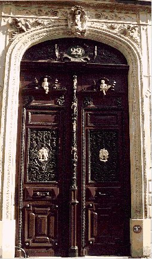
FIGURE I
(porte hermétique de Metz - cliquez sur la photo pour agrandir)Il s'agit, au vrai, d'une porte cochère carrée avec croisée d'entre-sol. Nous retiendrons pour cette étude les moulures des guichets, parties où l'on aperçoit les deux médaillons, les panneaux où l'on aperçoit deux silhouettes ; enfin des détails du dispositif de fermeture. Les guichets sont semblables. On peut y voir, outre le médaillon central, quatre ordres de symboles du
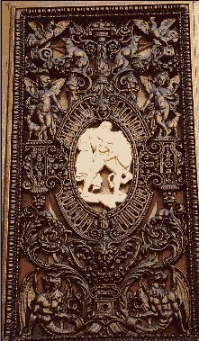
FIGURE II
(détail de guichet - cliquez sur la photo pour l'agrandir)haut en bas. D'abord, un coq et un renard. C'est une allégorie alchimique bien connue à laquelle Fulcanelli a consacré un chapitre du Mystère des Cathédrales. Elle voile l'opération de la fixation du Soufre. Le début de la coagulation de l'eau mercurielle semble aussi ne pas avoir eu de secret pour Basile Valentin ainsi que l'écrit Fulcanelli quand il examine un détail du porche central de la cathédrale d'Amiens :
« Contre le pied-droit du grand porche, nous retrouvons, en un quatre-feuilles engagé l'allégorie du coq et du renard, chère à Basile Valentin. »
On trouve plusieurs variations sur ce thème. Ces allégories expriment toutes, en effet, et c'est ce qui fait une partie de la difficulté de décryptage, un état d'équilibre instable d'une substance qui est dissoute et qui se volatilise en en laissant cristalliser une autre. Mais cette volatilisation a ceci de remarquable qu'elle ne correspond pas, comme on pourrait le penser, à une évaporation, mais à une redissolution. Cette remarque s'accorde bien avec les deux phases qu'évoque Fulcanelli dans le 3ème oeuvre, l'une de dissolution qui est la partie « volatile » et la partie « fixe » ou période d'assation. C'est donc expressément de la voie sèche qu'il est question ici [cf. Douze Portes de Ripley]. Le point important à saisir ici, à la lecture d'autres textes, est que le Mercure est promis à la mort par volatilisation et devra « laisser place à plus jeune que lui ». C'est en substance ce qu'écrit aussi Arnaud de Villeneuve :
« Apprends encore, Père vénérable, que les philosophes ont multiplié les noms de la Pierre mixte pour la mieux cacher. Ils ont dit qu'elle est corporelle et spirituelle, et ils n'ont pas menti, les Sages comprendront » [Semita Semitae]
où la partie spirituelle est le Mercure, et la partie corporelle, le Soufre blanc ou Sel. On retrouve dans la IIIème des Douze Clefs de Philosophie de Basile Valentin le thème de l'allégorie :
« C'est ce superbe manteau, avec le sel des Astres, qui suit ce soufre céleste, gardé soigneusement de peur qu'il ne se gâte, et les fait voler comme un oiseau, tant qu'il sera besoin, et le Coq mangera le renard, et se noiera et étouffera dans l'eau, puis reprenant vie par le feu sera (afin de jouer chacun leur tour) dévoré par le Renard. »
Le manteau de couleur pourpre représente la rosée des philosophes qui englobe [uperion] le Soufre. On doit admettre, comme on l'a dit ailleurs, que des mouvements de convection s'opèrent au sein de la matière et que, d'une certaine manière, l'étoile ou la fleur apparaît tour à tour, état différent ou plutôt forme différente d'une matière qui, au vrai, est toujours la même. C'est le phénix qu'évoque ensuite Basile. Cette allégorie du coq et du renard se rapproche aussi beaucoup de celle du pélican qui se dévore lui-même pour nourrir sa progéniture [il s'agit du Mercure et les oisillons sont Apollon et Artémis]. Le coq, enfin, est l'oiseau consacré à Minerve [Athéna] et il exprime, lorsqu'il est lié au renard, une allégorie dont parle Fulcanelli dans les Mystères : référez-vous à ce que nous disons de la noix de galle, du coq et de son rapport avec la rouille [ioV ou roia, par cabale, c'est-à-dire grenade] dans la section des blasons alchimiques.
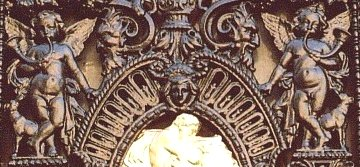
FIGURE III
(partie moyenne du guichet)Plus bas, nous apercevons, à la figure III, un ange qui sonne du buccin, accompagné d'un chien. Fidèle ami de l'homme, le chien ne suit pas moins son maître lorsque celui-ci s'adonne à l'alchimie. On connaît plusieurs chiens dans l'oeuvre, dont nous avons beaucoup parlé ailleurs. Le chien est l'animal consacré à Hécate [cf. Atalanta, XLVII], déesse triple, tenant à la fois de Séléné, d'Artémis et de Perséphone. Elle présente ainsi des traits qui la rapprochent surtout de la TERRE : l'association de Séléné et de Perséphone est en particulier une indication sur le SEL ou Soufre blanc, d'où la Pierre tire son squelette, c'est-à-dire le christophore [porteur de l'Or alchimique]. Quant au buccin dans lequel souffle l'ange, ou plutôt les deux anges puisque presque tout, hors mis le médaillon central, va par paire sur les deux guichets, ce buccin donc, évoque plutôt de par sa forme un cor de chasse. Il faut évoquer ici la constellation des Chiens de chasse, où brille une étoile qui porte le nom de Cor Caroli dont nous avons déjà parlé [Atalanta, XLVII]. Nous ajouterons ici d'une part que les raies spectrales de cette étoile double montrent, sur sa composante la plus brillante, du silicium et du mercure...Que d'autre part, Charles Ier d'Angleterre fut à la fois roi et martyr, ce que, par cabale, l'étudiant pourra comprendre sans peine.
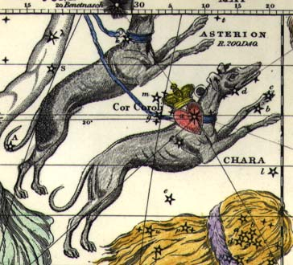
FIGURE IV
(les Chiens de chasse et Cor Caroli)Les Chiens de Chasse étaient les compagnons fidèles du Bouvier. Loin d'être un héros sans peur et sans reproche, intime des rois et des dieux, le Bouvier était à l'origine un humble mortel répondant au nom d'Icarius. C'était un simple paysan de l'Attique dont le destin croisa un jour le chemin de Dionysos. Le divin protecteur se promenait alors à travers les champs. Les lourdes grappes qui pendaient aux vignes d'Icarius l'attirèrent et le vigneron l'invita à se rendre compte par lui-même de la bonté de son raisin. Ravi de l'amabilité du bouvier, Dionysos décida de lui faire un royal présent. Dévoilant son identité, il lui confia le secret de la fabrication du vin. Icarius s'empressa de suivre la recette à la lettre, goûta au breuvage, et en tomba à genoux de ravissement. Il en chargea quelques outres sur sa charrette à boeufs, et s'en alla prêcher le culte de Bacchus auprès de ses voisins et amis. La fête fut mémorable. Les participants plongèrent littéralement dans les amphores, dont ils émergèrent hoquetant et titubant. Epouvantés par une telle scène, les bergers accusèrent Icarius de leur avoir fait boire une infâme mixture destinée à leur faire perdre la tête pendant que lui s'emparait tranquillement de leurs troupeaux. Ils se saisirent du malheureux, le tuèrent et le jetèrent dans un fossé. Ne le voyant pas revenir, sa fille Erigonè commençait à s'inquiéter. Elle entendit alors les pleurs des deux chiens du brave homme, Astérion et Chara. Elle comprit qu'il lui était arrivé malheur. Guidée par les chiens, elle découvrit son corps inanimé. Désespérée, Erigonè se jeta dans le fossé où ses deux fidèles compagnons la suivirent. Ecoeuré par cette hécatombe, les dieux ouvrirent le firmament au Bouvier accompagné de ses chiens. Cette parabole sur le Mercure et les chiens nous livre d'abord le nom d'Asterion [il s'agissait d'un des Argonautes, mais selon cette fable, on peut voir dans ce chien l'une des deux étoiles des alchimistes]. Quant à Chara qui doit s'écrire en fait Khara [cara], il s'agit du nom d'une chienne [homonyme de cara : qui réjouit le coeur, où l'on peut voir une allusion à l'âme et par voie de conséquence, au Soufre]. Quant à Erigonè [Hrigonh], on peut y voir par cabale Eos [hrigeneia], c'est-à-dire l'Aurore de l'oeuvre ; autrement dit, la fin de la dissolution, marquée par la conjonction des principes. Il s'agit, au vrai, d'une véritable purification [ierobotanh, homonyme spirituel de herigenion également proche de Hrigonh, qui désigne une sorte de verveine, plante consacrée, précisément, à la purification].
Ces cors de chasse, pour autant, sont des instruments à vents. Or, nous avons vu, dans l'introduction à l'Atalanta fugiens, qu'on avait établi des correspondances entre certains instruments à vent et les planètes ainsi que les signes du zodiaque. Ainsi, les instruments à vent symbolisent-ils l'élément FEU [symbolisme quaternaire, ou quinténaire même, si l'on tient compte de la quintessence]. Ce point s'accorde d'ailleurs avec la scène du haut du guichet, où l'on voit le coq et le renard. Si l'on tient compte du symbolisme septénaire, qui a trait aux planètes, on verra que, sous l'espèce du cornet, c'est Mars qui est indiqué. le Bélier, rappelons-le, est le domicile que la tradition astrologique a assigné à Mars, Bélier désignant lui-même Arès et Ariès [Toyson d'or]. Arès est un sel vitriolique qui se rapporte à Babylone : il s'agit du vitriol romain, sel formé de l'acide vitriolique [où les Anciens voyaient l'esprit universel, cf. Table d'Emeraude] et d'un Soufre [bleu, blanc, rouge ou vert]. Le symbolisme du cor de chasse se rattache donc à celui, plus général, tenant au principe fixe. Enfin, si l'on veut parler du duodénaire, l'instrument à vent se rapporte aux signes suivants : Lion, Vierge et Verseau. Selon le schéma que l'on a donné dans l'Atalanta, XLV, il est facile de voir que le Lion se rattache à la dissolution, la Vierge, à la gestation et le Verseau prélude à la réincrudation du Soufre. Rien ou presque dans le guichet de la figure II ne nous autorise à dire avec quel signe du zodiaque se raccorde notre cor de chasse. Rien vraiment ? Ce n'est pas si sûr. Si l'on tient compte que la « tonalité » générale des moulures du guichet, fort riches, se rattache à la spire et au contournement, à la torsade, on retrouve un thème utilisé couramment dans la symbolique alchimique, exploité en particulier par Ripley dans les fameux Ripley's Scrowls. Et ce thème est en rapport avec la viscosité. Aussi verrions-nous assez bien notre cor de chasse mettre en valeur le signe du Lion [cf. Atalanta, XLIV]. Sous le même ordre doit-on aussi placer l'une des planches du Mutus Liber qui signale le triangle de FEU [planche 14]. Signalons encore un détail qui ne se laisse pas voir de prime abord. Il s'agit d'une figure située à la partie supérieure du médaillon central, cf. figure III et où l'on devine une tête de Bélier stylisée, avec ses cornes évoquant le dieu Ammon.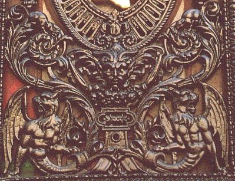
FIGURE V
(partie inférieure du guichet)C'est la partie inférieure, riche et complexe, qui permet d'asseoir définitivement notre impression que l'on assiste en fait à une gradation progressive dans les époques de l'oeuvre, si l'on considère les parties du guichet de bas en haut. Cette partie inférieure présente, en effet, deux monstres à tête de lion, à ailes de dragon et à queue de serpent. Nul doute - répétons-le - pourtant, que l'Artiste qui a conçu cette pièce d'ébénisterie n'avait pas en vue l'oeuvre alchimique. Nous l'avons déjà signalé et c'est un fait indéniable. Pour autant, il lui a donné les traits d'une sorte de compendium sur le Mercure, avant puis après sa phase d'animation [l'animation étant symbolisée par l'ange sonnant du buccin, exactement comme dans le frontispice du Mutus Liber]. Ces monstres représentent la partie la plus pontique du Mercure et on est en droit d'y reconnaître le « vinaigre très aigre » des vieux alchimistes, c'est-à-dire le tout premier état, sauvage et rebelle, du Mercure non assagi. Rappelons que ce Mercure ne sert à rien en tant que tel : il n'est jamais qu'un moyen, qu'un artifice, que l'Artiste doit employer pour conjoindre les deux extrémités du vaisseau de nature. C'est donc les diverses transformations que l'Azoth [autre nom commun du Mercure, aussi appelé communément duenech] fait subir au laiton que nous contemplons en ces volutes sauvages. Et c'est la raison pour laquelle on observe que ces séries vont par paire. Ainsi, ces démons, ces striges, représentent-ils les deux matières métalliques telles qu'on peut se les figurer, idéalisées, dans l'enfer du Tartare alchimique : l'athanor philosophique. Au-dessus, on peut voir que ces figures contournées et hideuses, véritablement dégouttantes [dégoûtantes] commencent à subir, sous l'effet de Vulcain ardent, une modification sensible [figure V]. Leur aspect de dragon écailleux a fait place à des volutes tourbillonnant au sommet desquelles nous observons deux petits chiens qui figurent les natures métalliques déjà transformées : vues de loin, ces figures se rapprochent de l'hiéroglyphe du Cancer. C'est assez dire que nous sommes encore dans la phase de dissolution. Ces deux figures sont situées de part et d'autre d'une autre, où l'on reconnaît un visage d'où émane un sentiment de sagesse et de quiétude. Nous avons des raisons d'y voir Thémis, la Déesse de la Justice. Du coup, nous trouvons l'explication de l'étrange partie centrale que le visage surplombe. Car L'ensemble évoque une balance, avec son fléau et les poids [on a déjà vu pareille image, à très peu près, dans un détail de moulure de la chapelle de l'Hôtel Lallemant, à Bourges, cf. Atalanta, XLI]. Ce sont évidemment les poids de nature qui sont ici mis en exergue, ceux sur lesquels l'Artiste ne peut pas avoir d'influence et qu'il est du seul ressort de Dieu de pouvoir connaître, à en croire les alchimistes qui sont toujours restés très réservés sur le sujet.
Il nous reste à voir le médaillon central. Celui-ci permet d'observer l'un des Douze Travaux d'Hercule, en l'occurrence le premier, c'est-à-dire son combat contre le Lion de Némée.
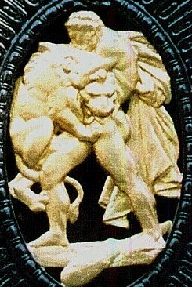
FIGURE VI
(combat d'Hercule contre le Lion de Némée)Ce combat a été évoqué dans la section Fontenay. Nous ne reprendrons que notre commentaire se rapportant à ce Premier Travail. Pour la description du Travail à proprement parler, veuillez vous référer à la section Fontenay.
Il est de toute nécessité que l'artiste se procure dès qu'il le pourra les éléments du dissolvant, afin d'en préparer son Mercure commun qui est aussi son Lion vert qui ne le quittera qu'à la toute fin du travail. La caverne indique le lieu où l'on peut en trouver la trace. Le nom du Mont, TrhtoV, indique assez qu'on ne saurait la trouver là où il n'y a point de fissure, de lézarde, de crevasses. Déjà, dans la section des Gardes du corps - la Force -, nous avons vu de quelle manière curieuse il fallait s'y prendre pour extraire le dragon écailleux d'une lézarde d'une tour. Nous n'insisterons pas sur l'airain, ni sur le fer, ni sur les pierres car l'Artiste qui a su élire sa prima materia connaît par définition tout son programme. Notons pour le débutant que l'Airain recouvre le Rebis dans son second état, résultat de l'action de son dissolvant, que le fer est omniprésent dans l'oeuvre, qu'enfin, les pierres servent de condiment au Mercure. Il est bien connu que Rhéa donna une pierre à dévorer à Cronos, à la place de Zeus. Et qu'après le Déluge, Deucalion et Pyrrha assurèrent la réparation du genre humain en jetant des pierres derrière eux, espérant ainsi obtenir la fin de leurs malheurs, par les os de leur Grand-mère.Evoquer une caverne, une lézarde, c'est dire beaucoup déjà et, comme les alchimistes l'ont fait remarquer, peu de paroles suffisent au Sage. Pour aider l'étudiant, nous lui rappellerons simplement l'acronyme V.I.T.R.I.O.L. Qu'il sache aussi que ce combat est au ciel, caché dans l'une des constellations, ce qui lui fera voir l'époque exacte du travail ainsi que les matières à employer [cf. zodiaque alchimique].
Ajoutons que le Lion de Némée a été engendré par Echidna, dont on voit les traits, idéalisés, au bas du guichet, à la figure V. Selon Pernety, d'ailleurs, ce lion serait descendu de l'orbe de la Lune, envoyé par Diane pour ravager la forêt de Némée. Descendu de l'orbe de la Lune, cela signifie-t-il qu'il y ait un rapport entre le symbolisme des nœuds lunaires et ce lion ? Nous n'oserions l'affirmer et laissons ce point en délibéré. Il n'aura pas échappé au lecteur que l'un des nœuds de la Lune contracte des rapports avec le mot udroV pour une raison qui tient à sa forme même. Avant de refermer l'étude des motifs de la figure II, il nous reste à dire un mot de la tête de vieillard que l'on aperçoit, en vis à vis de chaque ange, à la figure III. Il s'agit du Mercurius senex, cher à Jung, qui doit, lorsque les anges entonnent leur clairon et sonnent l'air suivant [cf. Atalanta fugiens], laisser place progressivement à plus jeune que lui.
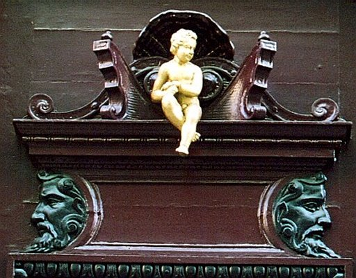
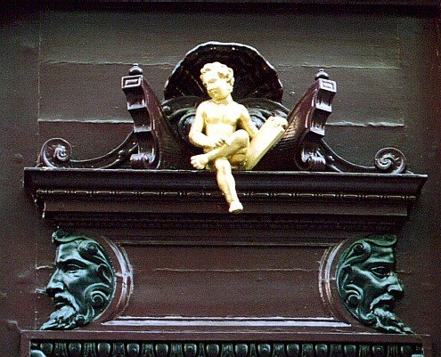
FIGURE VII
(panneaux au-dessus des guichets)Nous retrouvons ce vieillard dans les panneaux d'huisserie situés au-dessus des guichets [cf. figure I] et nous ne pouvons plus douter de ce que le Mercurius senex ait un rapport avec la Lune : il ne faut pas beaucoup d'imagination, en effet, pour distinguer un croissant de Lune qui encadre, par projection, la partie postérieure de la tête barbue. On notera que là encore, les visages sont opposés, chacun regardant dans l'axe de l'écliptique, le premier à l'Orient, le second à l'Occident [cf. Atalanta, XLVII]. On trouve des détails semblables, mais enrichis de variations accentuées, dans la parabole du chien de Corascène et de la chienne d'Arménie, parabole chère à Artéphius. La manière de procéder pour l'Artiste est de suivre les indications que lui donnent l'ange et la mérelle, que l'on aperçoit sur les bâtis des panneaux, au-dessus des guichets. L'ange est l'intermédiaire entre le Ciel et les hommes. C'est lui qui est tenu d'informer la Vierge de la parturition divine [l'Annonciation]. C'est lui encore, qui, par son urine [par cabale, la rosée de mai], féconde la Terre hermétique avant que, par le Lait de Vierge, l'embryon hermétique, ne s'accroisse sous la protection de la coquille saint-Jacques, tout environné de son eau benoîte. Pour comprendre les processus physico-chimique qui se déroulent alors dans le vase de nature, il faut que l'Artiste se laisse guider par dame Nature, qu'il ausculte les cavernes de la Terre, qu'il observe le contournement des roches, leurs couleurs, les tests de bélemnite encore visibles sur certaines d'entre elles. Il ne nous est pas permis, ici, de développer plus avant sans faire prendre à cette section une dimension inconsidérée. Simplement, nous attirerons l'attention sur la dolomisation du calcaire, sur sa transformation en matière saccharoïde et sur les nombreuses formations cristallines que l'on y trouve, parmi lesquelles il faut citer la tourmaline, le grenat, le péridot et le corindon. Naturellement, il faudra à l'Artiste un moyen de fixation, bien visible à droite, où l'angelot tient la lyre d'Orphée qui permet de fixer l'attention des animaux les plus sauvages. Sur tout cela, voyez les Mémoires de Gabriel-Auguste Daubrée et d'Achille Delesse.
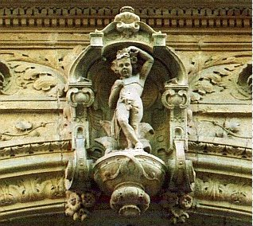
FIGURE VIII
(le petit roi)Juste au-dessus du portail, la riche ornementation achève de nous convaincre qu'une attention particulière a été portée sur des détails qui ne laissent pas de suggérer une intention hermétique. D'abord, admirons le panneau central où l'on peut deviner le petit roi de l'oeuvre [BasileuV]. Sculpté en majesté, l'embryon hermétique semble sortir du pied-douche qui est, au vrai, une fontaine de magnésie d'où l'on voit sortir des feuilles d'acanthe. Ce feuillage spécial, nous l'avons déjà aperçu dans des détails d'architecture de la tour Rivalland [cf. Fontenay]. Le symbolisme de la feuille d'acanthe, appliqué à l'alchimie, procède de deux observations.
- D'abord, que cette plante a des piquants ;
- Qu'ensuite elle est verte toute l'année.
Mentionnons ensuite que le mot acanthus désigne un arbre d'Egypte qui reste vert toute l'année. Selon une légende rapportée par Vitruve, l'acanthe aurait été utilisée dans l'architecture funéraire pour indiquer les épreuves de la vie et de la mort. Or, nous avons vu que tous les détails moulés des guichets représentaient une apologie de la phase de dissolution. Que les épines [akanqa] marquent cette époque de l'oeuvre, voilà ce que les emblèmes alchimiques n'ont jamais cessé de montrer, et nous en avons un des plus beaux exemples avec l'écusson hiéroglyphique de David Lagneau, que l'on retrouve encore sur un vitrail des Jacobins que Fulcanelli a analysé dans le Mystère des Cathédrales. C'est là que, encore une fois, nous touchons au plus haut secret de l'oeuvre, à la difficulté - proprement épineuse - qui fait que l'impétrant se trouve entouré d'un buisson ardent fait d'églantiers et de chardons, où l'on peut encore distinguer des centaurées [que l'on appelle aussi chardon bénit ou chardon étoilé, les deux étant d'ailleurs, sur le plan de la cabale, équivalents]. C'est dans ce fourré impénétrable, inextricable, que l'impétrant trouvera pourtant la solution, car, à en croire le chimiste Geoffroy l'Ainé :« Les principaux Sels minéraux sont le Nitre, le Sel marin, et le vitriol. Nous trouvons ces mêmes sels dans les plantes. Le sel essentiel de la Pariétaire est tout nitreux, il fuse sur les charbons comme le salpêtre. Les sels fixes du Chardon béni, de l'Absinthe, du Kali, de l'Éponge contiennent beaucoup de sel marin, qui se cristallise en cubes, et qui décrépite sur les charbons. » [Histoire de l'Académie royale des Sciences, 1707]
A cela, ajoutons cet extrait de Loysel, sur les plantes dont la potasse tient son origine :
« [..] les plantes, telles que le tournesol, les chardons, les orties, le bouillon blanc, la ciguë, l'yeble, le grand séneçon, le panais sauvage, les glaïeuls, les joncs, etc., et une variété prodigieuse de grandes plantes terrestres ou marécageuses. » [L'Art de la Verrerie, an VIII]
Nous estimons avoir dit l'essentiel sur le sujet de ce Mercure et de la fontaine de jouvence, d'où sort le petit roi. Cependant, il nous manque encore le moyen d'apprêter les substances, c'est-à-dire les natures métalliques. C'est, précisément, ce qui fait l'objet de la figure suivante :
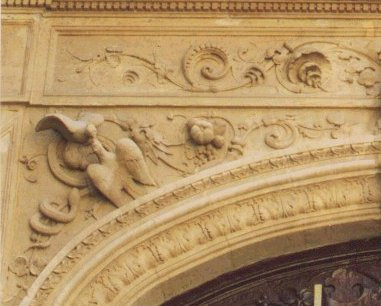
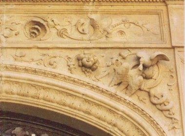
FIGURE IX
(les colombes de Diane)De nombreux symboles apparaissent ici qui sont, à n'en point douter, d'origine hermétique, sinon alchimique. De part et d'autre du BasileuV, que nous avons enlevé pour faire voir les deux colombes, nous distinguons deux nids. Dans chacun de ces nids, un oisillon à qui sa mère donne la becquée. C'est la phase de nutrition de la Pierre qui se signale par cette scène. Et le serpent enroulé sur le caducée achève de parfaire l'allégorie. C'est le fixe, en lutte avec le volatil, qui s'exprime là. La colombe représente souvent ce que l'homme contient d'impérissable, l'Âme, que les alchimistes appellent leur Soufre. Aussi est-elle, sur certains vases funéraires grecs, stylisée comme
« buvant à un vase qui symbolise la source de la mémoire. » [P. Lavedan, Dictionnaire illustré de la Mythologie et des Antiquités grecques et romaines, Paris, 1931]
On ne saurait mieux donner l'épithète du vase de nature, c'est-à-dire du Mercure philosophique. La source de la mémoire est représentée par deux roches qui laissent s'écouler une substance, sous l'effet de Vulcain, dont les Adeptes nous assurent qu'il s'agit de Lait de Vierge. Ils l'appellent aussi leur fontaine de magnésie et indiquent qu'on peut la trouver vers le Septentrion, là où l'on peut voir les Sept Boeufs de labour, à la croisée des méridiens. C'est le lieu, en effet, qui voit, plus que l'affrontement, la collaboration du Mercure et du Soufre et l'on peut deviner l'expression de cet équilibre précaire dans le signe des Gémeaux [cf. zodiaque alchimique]. Le fruit de cette union est indiqué par l'Artiste à qui l'on doit la frise : c'est une grenade [roia] que l'on aperçoit distinctement, en manière de Jardin des Hespérides miniature. Avant d'en arriver là, la dissolution est évidemment le passage obligé. Nous l'avons vu dans les détails des guichets, mais nous en retrouvons la trace dans la spirale que nous apercevons dans la frise supérieure, évoquant de manière irrésistible l'hiéroglyphe du Cancer [cf. Atalanta, XLII]. Les mouvements de convection de la matière sont même stylisés de part et d'autre de la « virgule » centrale où l'on devine le vibrion hermétique. Vous remarquerez qu'à droite, la virgule a été amputée d'une partie de sa queue, ablation due sans doute aux outrages du temps et des siècles de rafale de vent d'ouest...
Il nous faut à présent évoquer les détails d'huisserie du pêne de la porte cochère.
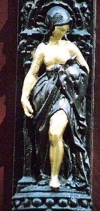
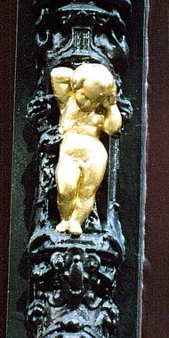
FIGURE X
(Pallas - Athéna et Eros)La figure X est un montage, préparé à partir des éléments d'huisserie que l'on trouve sur le gigantesque pêne de la porte cochère de la figure I. Notez que ces figurines sont répétées deux fois, avec dans l'ordre, en partant du haut : Eros, encadré par les anges situés sur les bâtis des panneaux situés au-dessus des guichets ; puis à la limite supérieure des panneaux, Athéna ; puis à nouveau Eros, à la limite supérieure des guichets ; enfin, à nouveau Athéna, encadrée par les médaillons centraux des guichets où est représentée la scène d'Hercule étouffant le lion de Némée. Il n'est pas douteux que le personnage que l'on aperçoit à gauche, sur la figure X, soit Athéna. Parce qu'elle est casquée. Or, les mythographes nous disent, qu'alors que Métis était enceinte, la Déesse fut avalée par son amant, Zeus, qui craignait que l'enfant qu'elle portait ne le détrônât [Zeus ressemble ici à Cronos à qui Héra fit avaler une pierre en lieu et place de son fils]. Mais le dieu sentit bientôt un violent mal de tête et il demanda à Héphaïstos de lui fendre le crâne d'un coup de hache. Athéna en sortit, par sa tempe déchirée, toute armée et casquée, en poussant un immense cri de guerre. Nous avons eu l'occasion, dans l'Atalanta, XXIII de faire voir que Pallas - Athéna n'était autre que le Soufre rouge en voie de réincrudation. Nous avions vu d'abord la naissance de l'embryon hermétique dans ce « coup de sang » de Zeus mais nous pensons qu'il faut plutôt y voir le soufre rouge. Quant au cri que pousse Athéna, n'en doutons point, c'est IW ! Cri d'invocation [iw], cri de douleur d'ailleurs qui n'en est pas moins cet immense cri de guerre par lequel Athéna veut signifier que :
« Hélas ! Malheureux père, malheureux enfants ! [...] Hélas ! malheureux, malheureux que je suis ! [...] Hélas ! malheureux ! quelles dures épreuves ! »
En effet, répété deux fois [iw iw] ou trois fois [iw iw iw], voilà le cri de douleur du Soufre sublimé dans le Mercure, lorsque, poussé par l'amour naturel qui le porte vers le Corps de la Pierre par Eros, il lui faut attendre le moment tardif où les pluies d'or s'abattront sur Rhodes. Notez qu'ici le cri est répété deux fois [on compte sur le pêne deux fois Athéna et Eros]. Par cabale, nous y trouvons d'ailleurs notre yo-yo, jouet bien connu des hermétistes, bien décrit par Fulcanelli et surtout par E. Canseliet, qui consiste en un disque de bois évidé comme une navette, que l'on fait descendre et remonter le long d'un fil relié à son axe [on l'appelle encore émigrette ou coblence]. Comment ne pas voir notre Mercure dans cet objet insolite et pourtant si banal, et dans ce fil axial, les sublimations réitérées du Mercure ? Naturellement, nous y voyons aussi notre ion ou iwn, par lequel est désignée la matière unique dont se compose alors le vase de nature [Compost philosophal] ainsi que le mode ionien dont Michel Maier nous dit :
« Ainsi le mode phrygien, était appelé par les Grecs belliqueux parce qu’on l’utilisait à la guerre et en allant au combat, et qu’il était doté d’une vertu singulière pour exciter le courage des soldats. A sa place on se sert maintenant du mode ionien qui était autrefois tenu pour propre à éveiller l’amour (comme l’est aujourd’hui le mode phrygien, ce qui nous fait supposer qu’ils ont été intervertis). » [Introduction à l'Atalanta fugiens]
le mot ionien rappelle le vocable grec ion qui signifie violet. C'est la couleur azurée au sommet des montagnes, là où s'opère la conjonction des matières. Or, la dissolution est l'opération par laquelle cette conjonction peut se produire. C'est la raison pour laquelle Maier insiste sur le changement entre le mode ionien et le mode phrygien. Ce yo-yo spécial à l'Art sacré peut être trouvé dans l'un des caissons de la chapelle appartenant à l'Hôtel Lallemant, à Bourges, que nous avons évoqué à propos du bilboquet.
Comme on voit, il s'agit bien d'un fil relié à l'axe d'un disque en bois de chêne que l'ange tient par une partie torsadée, surmonté d'une Terre dans laquelle les impétrants ont tôt fait de voir la stibine vulgaire. Quant à l'autre personnage, nous avons toute raison d'y voir Eros. En effet, dans l'emblème XXIII de l'Atalanta fugiens, on le voit figurer sur la droite, là où les époux royaux s'enlacent pour engendrer le petit roi. Eros est l'une des divinités primordiales qui exprime l'attraction réciproque, où il est facile de deviner les « affinités électives » de nos bases et de nos acides. A ce sujet, que le lecteur sache que nous ne sommes point dupes de nous-même. Et que nous faisons, à l'instar de Bachelard, une nette séparation entre :
« la poésie enracinée dans le cosmique et l'élémentaire, et la science dans sa pureté et son abstraction ! [...] L'attitude scientifique consiste précisément à résister contre l'envahissement du symbole » [une épistémologie de la raison ouverte, cité in Bachelard, Jean-Claude Margolin, Seuil, 1974]
Eh bien ! Nous pensons trouver un pont entre les deux, par le biais de l'émotion et de l'esthétique. Et nous pensons qu'il y a autant d'émotion à comprendre un théorème mathématique qu'un Psaume de Heinrich Schütz. Voilà le seul ressort, le leitmotiv qui n'a cessé de nous inspirer au long de toutes ces pages, offertes aux internautes de tous bords : le partage de connaissances par le seul vecteur de l'émotion. Dans le même temps, nous n'avons pas cessé de mettre en garde l'étudiant, l'Amoureux de Science, contre le danger qu'il y aurait à prendre à la lettre nos réflexions et qu'un grain de sel, toujours, devait leur être appliquées si l'on souhaitait leur conserver une teneur scientifique, a priori inconciliable avec le propos, déclaré ouvertement hermétique. A priori dont Fulcanelli, dans sa trilogie, a pu triompher en faisant voir que des processus physico-chimiques simples se voilaient sous les couleurs superposées du discours, et qu'au travers du prisme de notre esprit, on pouvait réaliser la décomposition spectrale de cet entrelacs spirituel que le vulgaire appelle « ésotérisme » ou « science occulte », sans y comprendre goutte. Ainsi, attribuer à l'acide un rôle actif et à la base, un rôle passif, appeler leur produit un sel neutre ne va pas sans poser des problèmes d'ordre psychanalytique, biens vus par Jung, qui y a consacré un lourd traité où s'impose une foudroyante érudition [Psychologie et Alchimie, Buchet-Chastel, 1970]. Cette partie a été vue dans le commentaire des Douze Portes de Ripley et les études alchimiques de Bachelard ont été citées, en introduction de la Lettre aux Vrais disciples d'Hermès de Limojon de saint-Didier [on y a combattu les propos assez outranciers de Canseliet contre Bachelard]. C'est à telle enseigne que le chimiste Boerhaave [cf. Chevreul] parlait de « sels hermaphrodites ». Veuillez cependant noter qu'Achille Delesse, dans son Mémoire sur le Métamorphisme des roches, à propos du gneiss, dit qu'il s'agit d'une roche hermaphrodite. Et que Gabriel-auguste Daubrée parle de menstrue en évoquant les sels dissous dans de l'eau surchauffée, conduisant aux formations cristallines. Que Marcelin Berthelot, qui ne croyait pas à l'hypothèse atomique, en vient à écrire, à la fin de ses Origines de l'Alchimie qu'il viendra peut-être un temps où l'on reviendra au Mercure des vieux alchimistes. Que Sir Frederick Soddy [1877-1956], prix Nobel de chimie 1921, pour ses études concernant la nature et l'origine des isotopes, écrivait dans son Radium, interprétation et enseignement de la radio-activité, cet extrait qui mérite d'être rapporté in extenso :
II est curieux de réfléchir, par exemple, à la remarquable légende de la Pierre philosophale, qui est une des croyances les plus anciennes et les plus universelles, et dont l'origine, si loin que nous puissions remonter dans les traces du passé, neCet extrait est rapporté par Jacques Sadoul [Le Grand Art de l'alchimie, J'ai Lu, Albin Michel, 1973].
saurait être avec certitude rapportée à la vraie source. On attribuait à la Pierre philosophale le pouvoir non seulement d'effectuer la transmutation des métaux,
mais aussi d'agir comme l'élixir de vie. Or, quelle qu'ait été l'origine de cette association d'idées, apparemment dénuée de sens, elle se montre en réalité comme l'expression très correcte et à peine allégorique de notre actuelle manière de voir. Il ne faut pas un grand effort d'imagination pour arriver à voir dans l'énergie la vie même de l'univers physique; et on sait, aujourd'hui, que c'est grâce à la transmutation que jaillissent les sources premières de la vie physique de l'univers. Cet antique rapprochement du pouvoir de transmutation et de l'élixir de vie n'est-il donc qu'une simple coïncidence ? Je préfère croire que ce pourrait bien être un écho venu de l'un des nombreux âges où, dans les temps préhistoriques, des hommes ont suivi avant nous la route même que nos
pieds foulent aujourd'hui. Mais ce passé est probablement si reculé que les atomes qui en furent contemporains ont eu littéralement le temps de se désintégrer totalement [...]
Sur Eros, encore ceci : c'est véritablement une entité abstraite, c'est-à-dire le désir qui rapproche et engendre les mondes. Et pour l'alchimiste, la phase marquée par l'accrétion des deux Soufres, qui donne naissance à l'embryon hermétique, que l'on voit à la figure VIII. ErwV figure le principe cosmogonique par lequel les époux royaux viennent se baigner dans la fontaine de jouvence. De quelle nature est cette fontaine ? Ce sont les fausses colonnes d'une fenêtre qui vont nous en dire plus :
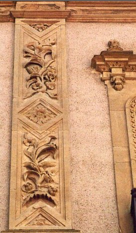
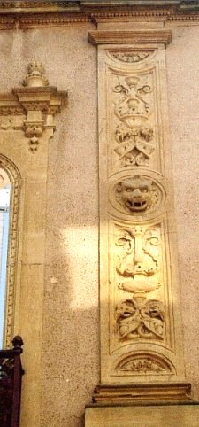
FIGURE XII
(encorbellements d'une fenêtre)La figure XII réalise un arrangement des fausses colonnes, situées de part et d'autre de la fenêtre dont on aperçoit l'encorbellement. A première vue, les moulures sont identiques, mais il n'en est rien. A gauche, nous voyons de haut en bas un triangle à base supérieure, symbole de l'EAU ; une végétation ; au centre un losange où l'on devine deux triangles entrelacés pour former l'EAU et le FEU réunis, c'est-à-dire le symbole de l'eau pontique. Plus bas, encore une végétation et tout en bas, un triangle à base inférieure qui est l'hiéroglyphe du FEU. Nous avons au total un résumé lapidaire et idéalisé sur l'eau mercurielle, dans une optique essentiellement ésotérique. A droite, au contraire, c'est l'exotérisme qui domine. Les triangles sont remplacés par des demi-lunes ; le losange par une tête de félin où nous reconnaissons le lion vert ; aux végétations de gauche succèdent des fontaines. Et quelles fontaines ! Il s'agit en effet de combinaisons de lampe à huile, de fontaine d'eau vive, d'écuelle des Sages et d'animal ailé. A cela s'ajoutent des volutes symétriques où l'on voit des cornes d'Ammon. Voilà un langage bien peu exotérique et qui réclame quelques explications. Il est pour cela nécessaire que le lecteur prenne connaissance du traité de Batsdorff, le Filet d'Ariadne, que certains attribuent aussi à Gaston de Claves. Ils y verront d'abord, au chapitre du Fourneau philosophal, l'image de l'athanor tel que le tient la grande tradition alchimique. Puis, celle de l'écuelle. Enfin, celle du cendrier. Le tout est ce que les alchimistes appellent l'athanor ou fourneau philosophique, là où les hermétistes préfèrent parler de fontaine de jouvence. L'opération à pratiquer est clairement indiquée par le Lion vert. Le résultat est la première couronne de perfection, bien visible sur la fontaine du bas. C'est ce que donne à voir de manière semblable les deux végétations de gauche, où il semble que l'on devine des boutons en haut, et des fruits en bas. Entre-temps, le Soleil et la pluie sont passés par là et ont fait fructifié ce qui n'était qu'en devenir. Rappelons que la première couronne représente la putréfaction totale de la matière, solution de la conjonction des principes. Ce passage entre les deux états, d'une matière amorphe à une matière en dissolution consiste à mettre à mort le vieux roi et à le dépecer. Tous les grands alchimistes ont insisté sur cette mise en pièce préalable, indispensable au retour des cendres et à la résurrection du roi, sous forme d'un jeune homme [cf. Atalanta, XXIV - cf. aussi Margarita preciosa novella de Petrus Bonus - cf. Splendor Solis - cf encore un mss Add. A 287 f. 98 r. et f. 104 v., Oxford, Bodleian Library qui représente la mise à mort du dragon, allégorie de la « fixation » du Mercure, quoique le terme soit impropre - cité in Alchimie, ouvrage collectif, Heinz Moos Verlag München, Pierre Belfond, 1972]. Pernety a pensé que le dépeçage du corps d'Osiris devait être mis sur le compte d'une même légende. Voyez encore l'allégorie de Merlin, relatée dans la prima materia. Mais il y a plus. En effet, un agrandissement des clichés de la figure XII, détail de droite [nos « fontaines »] permet de repérer les éléments suivants :
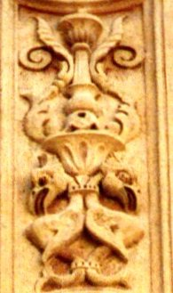
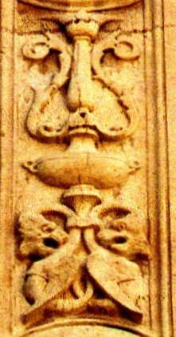
FIGURE XIII
(les « fontaines »)Ces deux ensembles, à gauche, la fontaine supérieure et à droite, la fontaine inférieure, mettent en évidence deux groupes d'animaux. A gauche, il semble s'agir de rapaces, serrés par le collet et dont l'une des singularités est d'être pourvus de queue de poissons en guise de pattes. L'association du rapace [aigle ou vautour, cela n'est pas indifférent] et du poisson peut être analysée selon notre version du zodiaque alchimique. C'est dans le signe du Capricorne que se place l'opération dont le hiéroglyphe est constitué par ces deux aiglons. A droite, on retrouve deux animaux ailés qui semblent avoir des têtes de félin et des queues de serpent, mais ils sont difficiles à distinguer. Il se pourrait qu'il s'agisse soit de lionceaux ailés, soit de dragons. Il semble, en ce cas, qu'il faille placer cette fontaine dans le signe du Sagittaire. Ainsi, de notre point de vue, le vase de gauche, surmonté de sa fontaine, décrit la matière telle qu'elle apparaît pratiquement au début du travail [Capricorne = 3ème signe], juste avant la dissolution. Et le vase de droite serait la même matière, contenant le Soufre sur le point d'être réincrudé [Sagittaire = 10ème signe]. Sur tout cela, voyez le diagramme du zodiaque alchimique figurant à l'Atalanta, XLV.
C'est encore la même parabole que l'on voit sur un des vitraux de la cathédrale de Metz, sans que pour autant l'artiste ait voulu y mettre une attention hermétique. C'est donc nous qui soulignons, pour ainsi dire.
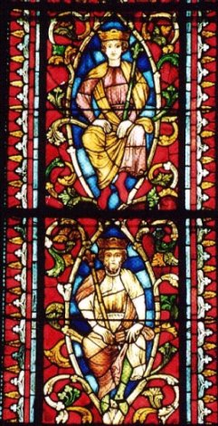
FIGURE XIV
(cathédrale de Metz - le Père et le Fils)C'est en observant ces magnifiques vitraux, ces métamorphoses spirituelles, que l'on se demande si, en définitive, toute l'alchimie ne serait pas une transposition à l'échelle de la matière de ce qui fait l'essentiel de la doctrine chrétienne : d'abord, la mise sur la croix [Passion du Christ], c'est-à-dire la mise au creuset [crux = croix, creuset] de la matière. Puis, la mise au tombeau [dissolution, putréfaction]. Avant la résurrection [retour des cendres, passage de l'obscurité à la lumière]. Il s'agit d'un thème qui a été donné comme étant le plus probable, de l'explication du symbolisme hermétique touchant la métamorphose de la matière. Cette thèse a été défendue par Jung et par tous ceux qui n'ont jamais voulu croire que l'alchimie opérative avait réellement existé, ce dont plus personne ne doute actuellement. On ne peut néanmoins se départir du fait qu'une vérité apparaît, en filigrane, derrière cette vaste, cette prodigieuse allégorie, cette gigantesque parabole. Naturellement, pour des raisons historiques, il n'est pas question pour nous de verser dans la thèse inverse qui ferait du christianisme une allégorie du processus alchimique. N'oublions pas, en effet, que les écrits hermétiques datent du IIIe siècle après J.-C.
Nous terminerons l'étude de ce logis alchimique en relevant trois figures d'entablement de fenêtres de cette magnifique façade.
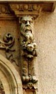
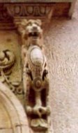
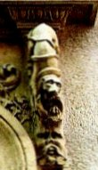
FIGURE XV
(trois têtes sous le même voile)En parlant de Cybèle, Cérès et Isis, Fulcanelli avait admis qu'il s'agissait de trois têtes sous le même voile. Il entendait parler de la terre hermétique, c'est-à-dire du principe féminin de l'oeuvre, vu sous le plan du Mercure particulier qu'on appelle la « Lunaire » ou encore « crachat de Lune », sans aucun rapport, faut-il le noter, avec le nostoc [cf. Atalanta, XXXVII]. Dans le cas présent, c'est le Mercure à proprement parler dont nous entendons parler, sous le point de vue de ses différents états. Ainsi, à gauche, observons-nous le Mercure dans son premier état, qui correspond au Mercurius senex de Jung. C'est la figure de Cronos. La correspondance zodiacale est le signe du Capricorne, 3ème signe dans l'ordre des travaux [cf. Atalanta, XLV]. Au centre, le Lion vert correspond à un état intermédiaire du Mercure, où la dissolution a lieu. Il correspond à l'ensemble Lion - Cancer - Gémeaux. La blancheur du poitrail dit assez le résultat qu'il faut obtenir. Enfin, à droite, le chien, décidément très présent dans le symbolisme alchimique. Il paraît qu'il s'agit d'Anubis qui accompagnait Osiris alors que Macedon revêtait la forme d'un loup. Le chien, lié à la canicule, est inséparable du signe du Cancer, là où la température la plus haute est requise. L'intérêt hermétique de cette figure est de faire comprendre que la canicule, en alchimie, s'obtient avec un feu de bois [d'écorce pour préciser, comme on l'a montré dans le commentaire de la Philosophie Naturelle des Métaux]. En effet, en grec, le verbe aboyer [ulaw] est proche d'assonance avec ulh, le bois, la forêt. Mais ulh, pour le lecteur qui souhaiterait approfondir, c'est encore un résidu matériel, la partie grossière d'un corps ou, tout bonnement, de la lie de vin [cf. tartre vitriolé]. Au vrai, cette canicule est marquée par le lever de Sirius, au 2ème décan du Cancer. On voit ainsi le double aspect du chien. En effet, la canicule est ce moment de la saison où le soleil inonde de ses rayons la vigne, pendant la canicule : le rayon igné ira d'abord se concentrer dans le raisin, avant de sédimenter dans l'eau de vie, et d'être utilisé comme moyen qu'on dit occulte, pour préparer une nouvelle terre où, ramené sous forme vive, il retrouvera dans l'escarboucle des Sages sa forme première, mais transfigurée. Le chien indique aussi le moment des sublimations philosophiques, à en croire Diodore de Sicile :
« Ce fut alors et au lever de la Canicule que le Nil, qui croît tous les ans dans cette saison, rompit ses digues et se déborda d'une manière si furieuse qu'il submergea presque toute l'Egypte, et particulièrement cette partie dont Prométhée était gouverneur ; de sorte que peu d'hommes échappèrent à ce déluge. L'impétuosité de ce fleuve lui fit donner alors le nom d'Aigle. Prométhée voulait se tuer de désespoir, lorsqu'Hercule se surpassant lui-même en cette occasion entreprit par un effort surhumain de réparer les brèches que le Nil avait faites à ses digues, et de le faire rentrer dans on lit. voilà le fondement de la fable qui dit qu'Hercule tua l'Aigle qui rongeait le foie de Prométhée » [Histoire universelle de Diodore de Sicile. Tome premier (trad. en françois par monsieur l'abbé Terrasson), Paris, chez de Bure l'aîné, 1737-1744]